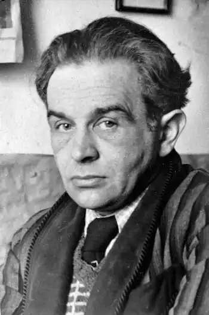

ҐАЛЧИНСЬКИЙ, Константи Ільдефонс (Galczynski, Konstanty Ildefons — 23.01. 1905, Варшава — 06.12.1953, там само) — польський поет.Константи Ільдефонс Ґалчинський народився 23 січня 1905 р. у Варшаві. Із початком Першої світової війни його батьки переїхали у Москву, де Константи навчався у школі Польського комітету. У 1918 р. сім'я Ґалчинських повернулася у Варшаву. Закінчивши гімназію, Константи вступив в університет на відділення класичної англійської фітології. Гуманітарна освіта дала йому не тільки знання зі світової культури та мистецтва, а й змогу відчути поезію ніби зсередини, блискуче опанувати прийоми віршування — від гекзаметра до верлібру. Писати Ґалчинський вчився у П. де Ронсара, А. Рембо, Данте, Ш.Бодлера, В. Шекспіра, Р.М.Рільке. Великий вплив на становлення його художнього світу справив німецький романтик Е.Т.А. Гофман. Саме від Гофмана бере початок той сплав фантазії, іронії, емоційної насиченості, що характерний для творчості Ґалчинського.
У 1923 році вийшли друком перші вірші Ґалчинського. У його ранній поезії багато від юнацької пози, бажання епатувати ("Вулиця шарлатанів", "Музі ніжки цілую", "Привіт, Мадонно") і водночас неприйняття богемності й естетства ("Одягну я штани чорні, цвинтарні...").
Університетські заняття були перервані службою у війську. Вірші цього періоду свідчать про світоглядну орієнтацію поета; він дедалі проникливіше вдивлявся у життя. У 1928 р. Ґ. опублікував поему "Кінець світу" і підзаголовком "Видіння святого Ільдефонса, або Сатира на Всесвіт" ("Koniec swiata, Wizje swiQtego Ildefonsa czyli Satyra na Wszechswiat"). Притаманна особистості Ґалчинського іронічність стає важливою прикметою його поетичного стилю. У цей час у культурному житті Польщі заявило про себе літературне угруповання "Квадрига", засноване у 1927 році. Ґалчинський став його активним членом. У колі проблем цієї групи першочерговими були питання творчої відповідальності поета. Ґалчинський щиро поділяв думку про суспільне призначення поезії. Його вірші стають не лише автопортретом художника, а й портретом епохи. Мандри зачарованої душі у казкових країнах ранніх поезій Ґалчинського поступаються місцем лірично-гротесковим замальовкам міського життя. Це поема "Польське пекло", вірші "Марш масонів", "Вулиця Товарна", "Емігранти" та ін. Творчий злет поета-початківця пов'язаний з його великим коханням та одруженням.У 1931 — 1933 pp. Ґалчинський працював референтом з питань культури у польському консульстві в Берліні. Тут він створив один із своїх найкращих творів — поему "Бал у Соломона" ("Ваі її Salomona"), пройняту болем і стурбованістю за людину та людство. У 1934—1936 pp. поет із сім'єю жив у Вільнюсі, багато писав. Створена у цей час поема "Народне свято" ("Zabawa ludowa", 1934) свідчить про інтенсивні пошуки нових засобів зображення дійсності, збагачення віршового ладу. У 1937 р. вийшла друком збірка Ґалчинського "Поетичні твори" ("Utwory poetyckie"). Напередодні Другої світової війни Ґалчинський, як і більшість європейських письменників, розмірковує про відповідальність інтелігенції за долю світу. Найчастіше ставлення поета до тогочасної інтелігенції гостро критичне: "Ми весь час біжимо. З міста до міста. Інтелігенти. Сумуюча нація. Гинучий клас. Малі, замерзлі". Лірично-гротескова поезія Ґалчинського наповнюється соціальними мотивами. З початком війни у 1939 р. поет був призваний в армію, а 17 вересня того ж року рядовий піхоти Ґалчинський потрапив у німецький полон і п'ять з половиною років провів у таборі для військовополонених. У повоєнному ліричному шедеврі "Веселі свята "поет так написав про цей жахливий час: Скільки днів у полоні прожито,Знемагав я у рабській роботі.Срібний місяць, мов серце розбите,Повисав на колючому дроті.(Пер. В. Гоцуленка)Чимало табірних поезій Ґалчинського збереглося. Вірші ходили у списках, їх передавали з уст в уста. Серед них — знаменита "Пісня про солдатів Вестерплятте" ("Piesc о zolnierzach Westerplatte"), присвячена захисникам Гданська: Настали літні дні, колиСудилося вмирати,І маршем просто в небо йшлиСолдати з Вестерплятте.(Пер. Р. Лубківського)Лише навесні 1946 року Ґалчинський повернувся на батьківщину. Мешкав у Варшаві. Вірив у нову Польщу. У 1946—1953 pp. він видав збірки "Вірші" ("Wiersze"), "Зачарований візок" ("Zaczarowana dorozka", 1948), "Шлюбні обручі" ("Slubne obrqczki", 1949), "Ліричні вірші" ("Wiersze liryczne", 1952), "Пісні" ("Piesni", 1953), цикл сатиричних мініатюр "Зелена Гуска" ("Zielonagqs"), віршовані фейлетони "Листи з фіалкою" ("Listy z fiolkiem", 1946—1950); публікувався у популярному журналі "Пшекруй" ("Огляд"). Злигодні воєнних років підірвали здоров'я Ґалчинського: інфаркти 1940 і 1952 pp. він переміг, а третій виявився фатальним. 6 грудня 1953 p. поета не стало.Висока духовна наснага пронизує всю поетичну спадщину Ґалчинського. Життєві та соціальні драматичні катаклізми, що випали на його долю, не похитнули властивого поетові життєствердного світовідчуття. "Посмішка — моральний обов'язок людини",— напівсерйозно, напівжартома стверджував він. Талант Ґалчинського барвистий і багатогранний. Його філологічна освіченість передбачає інтелектуального читача для вишуканої, високої поезії ("Муза", "Венера", "Гімн Аполлону", "Ніобея"). А його сатиричні та жартівливі вірші написані у легкій, ігровій, доступній манері оповіді. Ось, наприклад, вірш "Чому огірок не співає": Питання оце заголовне,Яке ми посміли задати,Із мукою, навіть із болемНалежало б нам розв'язати.Якщо огірок не співаєВ негоду і в днину погожу,Таку, певне, долю він має І жити інакше не може...(Пер. І. Глинського)Творчість Ґалчинського відзначається парадоксальністю думки, афористичністю і лаконізмом письма, узагальненістю характеристик. Його поетичний стиль поєднав лірику, гумор і сатиру. Його сатира різноманітна за жанрами: сатиричні вірші, байки, поеми, фейлетони. У світову літературу XX століття поет Константи Ільдефонс Ґалчинський увійшов як безсумнівний новатор художньої форми, котрий поставив на службу мистецтву прийоми гротеску й абсурду. Його художні відкриття стали набутком сучасної поезії, у тому числі й української (поеми І. Драча "Соловейко-Сольвей" та "Зоря і смерть Пабло Неруди"). Українською мовою окремі твори Ґалчинського переклали Р. Лубківський, І. Глинський, К. Гурницький, В. Гуцаленко, С. Космачевська, Д. Павличко, П. Тимочко та ін. Г. Бондаренко